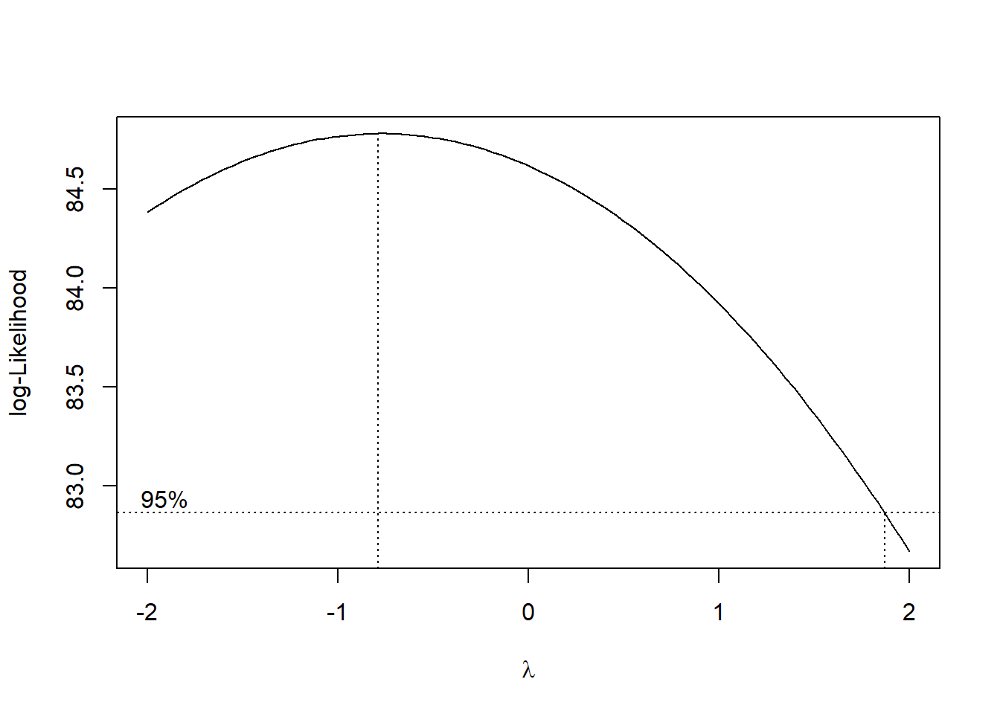
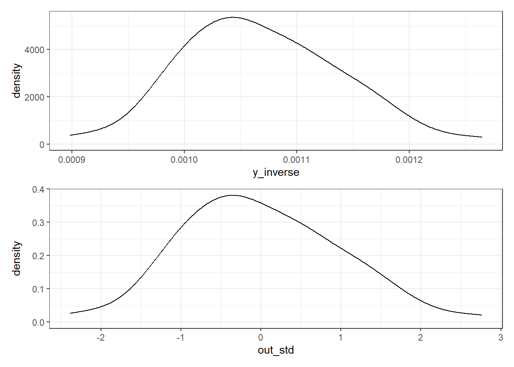
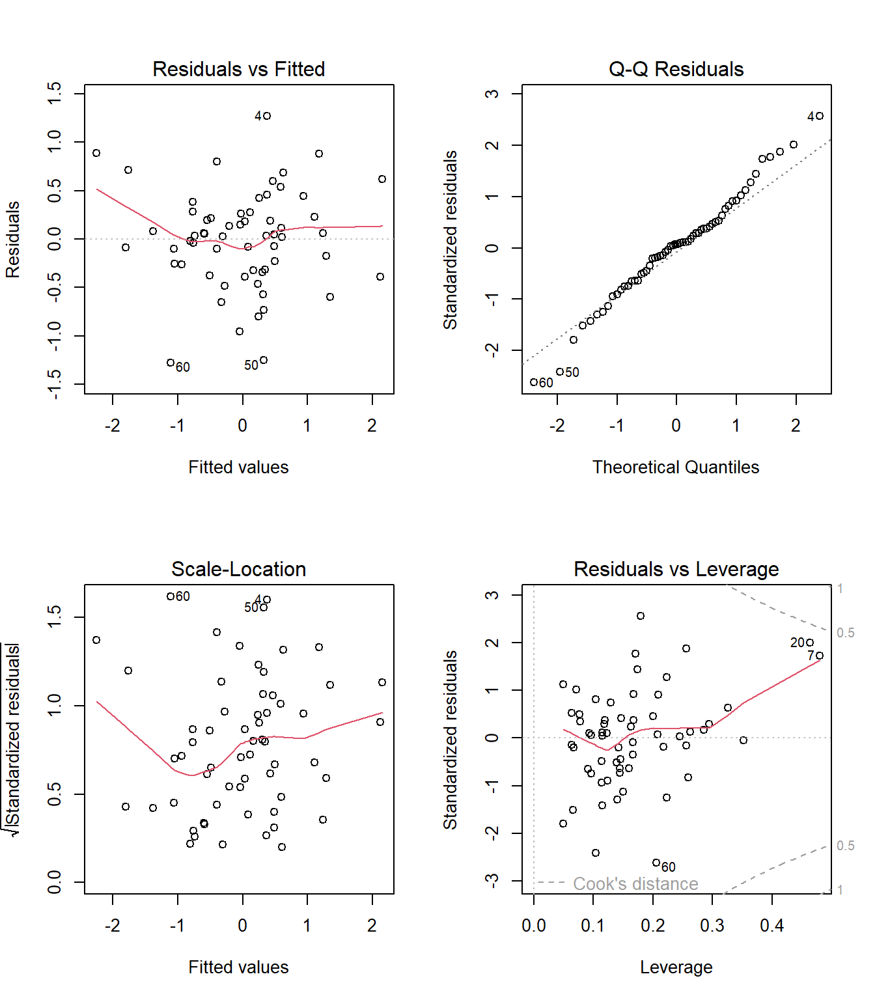
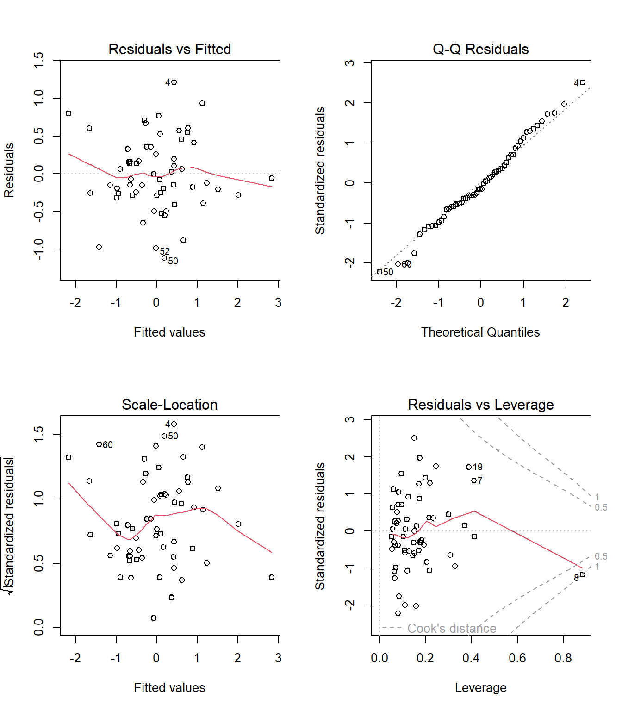

knitr::opts_chunk$set(comment = NA)
library(janitor)
library(broom)
library(car)
library(gt)
library(Hmisc)
library(MASS)
library(mosaic)
library(glmnet)
library(conflicted)
library(patchwork)
library(tidyverse)
conflicts_prefer(dplyr::select)
theme_set(theme_bw())32 NEW!! A Few LASSO Ideas
32.1 R Setup Used Here
32.1.1 Data Load
pollution <- read_csv("data/pollution.csv", show_col_types = FALSE) 32.2 The pollution data
Consider again the pollution data set we developed in Chapter 13 which contains 15 independent variables and a measure of mortality, describing 60 US metropolitan areas in 1959-1961.
pollution# A tibble: 60 × 16
x1 x2 x3 x4 x5 x6 x7 x8 x9 x10 x11 x12 x13
<dbl> <dbl> <dbl> <dbl> <dbl> <dbl> <dbl> <dbl> <dbl> <dbl> <dbl> <dbl> <dbl>
1 13 49 68 7 3.36 12.2 90.7 2702 3 51.9 9.7 105 32
2 28 32 81 7 3.27 12.1 81 3665 7.5 51.6 13.2 4 2
3 10 55 70 7.3 3.11 12.1 88.9 3033 5.9 51 14 144 66
4 43 32 74 10.1 3.38 9.5 79.2 3214 2.9 43.7 12 11 7
5 25 12 73 9.2 3.28 12.1 83.1 2095 2 51.9 9.8 20 11
6 35 46 85 7.1 3.22 11.8 79.9 1441 14.8 51.2 16.1 1 1
7 60 67 82 10 2.98 11.5 88.6 4657 13.5 47.3 22.4 3 1
8 11 53 68 9.2 2.99 12.1 90.6 4700 7.8 48.9 12.3 648 319
9 31 24 72 9 3.37 10.9 82.8 3226 5.1 45.2 12.3 5 3
10 15 30 73 8.2 3.15 12.2 84.2 4824 4.7 53.1 12.7 17 8
# ℹ 50 more rows
# ℹ 3 more variables: x14 <dbl>, x15 <dbl>, y <dbl>Here’s a codebook:
| Variable | Description |
|---|---|
y |
Total Age Adjusted Mortality Rate |
x1 |
Mean annual precipitation in inches |
x2 |
Mean January temperature in degrees Fahrenheit |
x3 |
Mean July temperature in degrees Fahrenheit |
x4 |
Percent of 1960 SMSA population that is 65 years of age or over |
x5 |
Population per household, 1960 SMSA |
x6 |
Median school years completed for those over 25 in 1960 SMSA |
x7 |
Percent of housing units that are found with facilities |
x8 |
Population per square mile in urbanized area in 1960 |
x9 |
Percent of 1960 urbanized area population that is non-white |
x10 |
Percent employment in white-collar occupations in 1960 urbanized area |
x11 |
Percent of families with income under $30,000 in 1960 urbanized area |
x12 |
Relative population potential of hydrocarbons, HC |
x13 |
Relative pollution potential of oxides of nitrogen, NOx |
x14 |
Relative pollution potential of sulfur dioxide, SO2 |
x15 |
Percent relative humidity, annual average at 1 p.m. |
32.3 Should We Rescale any Predictors?
Let’s get some basic summary statistics for our candidate predictors. When we do, we see that variable x8 is roughy 100 times larger than all of our other predictors.
df_stats(~ x1 + x2 + x3 + x4 + x5 + x6 + x7 + x8 + x9 +
x10 + x11 + x12 + x13 + x14 + x15, data = pollution) response min Q1 median Q3 max mean sd
1 x1 10.00 32.750 38.000 43.250 60.00 37.366667 9.9846775
2 x2 12.00 27.000 31.500 40.000 67.00 33.983333 10.1688985
3 x3 63.00 72.000 74.000 77.250 85.00 74.583333 4.7631768
4 x4 5.60 7.675 9.000 9.700 11.80 8.798333 1.4645520
5 x5 2.92 3.210 3.265 3.360 3.53 3.263167 0.1352523
6 x6 9.00 10.400 11.050 11.500 12.30 10.973333 0.8452994
7 x7 66.80 78.375 81.150 83.600 90.70 80.913333 5.1413731
8 x8 1441.00 3104.250 3567.000 4519.750 9699.00 3876.050000 1454.1023607
9 x9 0.80 4.950 10.400 15.650 38.50 11.870000 8.9211480
10 x10 33.80 43.250 45.500 49.525 59.70 46.081667 4.6130431
11 x11 9.40 12.000 13.200 15.150 26.40 14.373333 4.1600956
12 x12 1.00 7.000 14.500 30.250 648.00 37.850000 91.9776732
13 x13 1.00 4.000 9.000 23.750 319.00 22.650000 46.3332896
14 x14 1.00 11.000 30.000 69.000 278.00 53.766667 63.3904678
15 x15 38.00 55.000 57.000 60.000 73.00 57.666667 5.3699309
n missing
1 60 0
2 60 0
3 60 0
4 60 0
5 60 0
6 60 0
7 60 0
8 60 0
9 60 0
10 60 0
11 60 0
12 60 0
13 60 0
14 60 0
15 60 0Let’s dampen the size of that x8 variable down a little to make our coefficient comparisons easier later, by dividing all of the x8 values by 100.
pollution <- pollution |>
mutate(x8 = x8/100)32.4 A Kitchen Sink Model
We’ll begin by fitting the obviously underpowered model with all 15 main effects used to predict our outcome.
mod_sink <- lm(y ~ x1 + x2 + x3 + x4 + x5 + x6 + x7 + x8 + x9 +
x10 + x11 + x12 + x13 + x14 + x15,
data = pollution)32.4.1 Considering an Outcome Transformation
boxcox(mod_sink)
OK. In light of this Box-Cox plot, let’s consider taking the inverse of our outcome here. I’ll take that inverse and then standardize the result using the scale() function to both subtract the mean of the transformed outcome and divide by its standard deviation, so that our new outcome, which I’ll call out_std has mean 0, standard deviation 1, and a shape similar to that of the inverse of our \(y\).
pollution <- pollution |>
mutate(y_inverse = 1/y,
out_std = scale(1/y, center = TRUE, scale = TRUE))
p1 <- ggplot(pollution, aes(x = y_inverse)) + geom_density()
p2 <- ggplot(pollution, aes(x = out_std)) + geom_density()
p1 / p2
OK. So now, I’ll build a revised kitchen sink model to use this new outcome.
mod_sink2 <- lm(out_std ~ x1 + x2 + x3 + x4 + x5 + x6 + x7 + x8 + x9 +
x10 + x11 + x12 + x13 + x14 + x15, data = pollution)
tidy(mod_sink2, conf.int = TRUE, conf.level = 0.9) |>
select(term, estimate, std.error, conf.low, conf.high, p.value) |>
gt() |> fmt_number(decimals = 3)| term | estimate | std.error | conf.low | conf.high | p.value |
|---|---|---|---|---|---|
| (Intercept) | −15.899 | 6.886 | −27.469 | −4.328 | 0.026 |
| x1 | −0.035 | 0.015 | −0.059 | −0.011 | 0.020 |
| x2 | 0.036 | 0.017 | 0.007 | 0.066 | 0.044 |
| x3 | 0.055 | 0.030 | 0.005 | 0.105 | 0.074 |
| x4 | 0.176 | 0.134 | −0.049 | 0.400 | 0.196 |
| x5 | 2.184 | 1.099 | 0.338 | 4.031 | 0.053 |
| x6 | 0.225 | 0.187 | −0.089 | 0.539 | 0.234 |
| x7 | 0.016 | 0.028 | −0.031 | 0.063 | 0.573 |
| x8 | −0.006 | 0.006 | −0.017 | 0.005 | 0.351 |
| x9 | −0.070 | 0.021 | −0.105 | −0.035 | 0.002 |
| x10 | 0.012 | 0.026 | −0.031 | 0.056 | 0.636 |
| x11 | 0.002 | 0.051 | −0.084 | 0.087 | 0.974 |
| x12 | 0.011 | 0.008 | −0.002 | 0.024 | 0.160 |
| x13 | −0.022 | 0.016 | −0.049 | 0.004 | 0.169 |
| x14 | −0.001 | 0.002 | −0.005 | 0.003 | 0.549 |
| x15 | 0.001 | 0.018 | −0.029 | 0.032 | 0.936 |
Does this new model show a strong fit to the data?
glance(mod_sink2) |> select(r.squared:p.value, df, df.residual, nobs) |>
gt() |> fmt_number(r.squared:p.value, decimals = 3)| r.squared | adj.r.squared | sigma | statistic | p.value | df | df.residual | nobs |
|---|---|---|---|---|---|---|---|
| 0.774 | 0.698 | 0.550 | 10.070 | 0.000 | 15 | 44 | 60 |
glance(mod_sink2) |> select(logLik, AIC, BIC, deviance) |> gt() |>
fmt_number(decimals = 2)| logLik | AIC | BIC | deviance |
|---|---|---|---|
| −39.96 | 113.92 | 149.52 | 13.31 |
32.4.2 How much collinearity are we dealing with?
vif(mod_sink2) x1 x2 x3 x4 x5 x6 x7
4.113888 6.143551 3.967774 7.470045 4.307618 4.860538 3.994781
x8 x9 x10 x11 x12 x13 x14
1.658281 6.779599 2.841582 8.717068 98.639935 104.982405 4.228929
x15
1.907092 Clearly, we have some enormous collinearity to deal with, given that we have many VIFs over 5, some even over 100.
So a reduction in the size of the model seems appealing for multiple reasons.
32.5 Using the LASSO to suggest a smaller model
To begin, we will create a data matrix for our predictors, as follows:
pred_x <- model.matrix(mod_sink2)Next, we create a matrix of our outcome.
out_y <- pollution |> select(out_std) |> as.matrix()The LASSO involves both a cross-validation step, and a fitting step. Here’s the code we’ll use in this case:
set.seed(123456)
cv_poll1 <- cv.glmnet(pred_x, out_y, type.measure = "mse", nfolds = 10)
mod_las1 <- glmnet(pred_x, out_y, alpha = 1, lambda = cv_poll1$lambda.min)Now, let’s look at what the LASSO does. As we can see from the tidied output below, some predictors are dropped from the model, while others have their coefficients shrunk towards zero as compared to what we saw in the “kitchen sink” model.
tidy(mod_las1) |> gt()| term | step | estimate | lambda | dev.ratio |
|---|---|---|---|---|
| (Intercept) | 1 | -2.345226117 | 0.03783146 | 0.7335261 |
| x1 | 1 | -0.026289494 | 0.03783146 | 0.7335261 |
| x2 | 1 | 0.020872173 | 0.03783146 | 0.7335261 |
| x3 | 1 | 0.017666053 | 0.03783146 | 0.7335261 |
| x6 | 1 | 0.101973313 | 0.03783146 | 0.7335261 |
| x7 | 1 | 0.012515424 | 0.03783146 | 0.7335261 |
| x8 | 1 | -0.006425945 | 0.03783146 | 0.7335261 |
| x9 | 1 | -0.060226425 | 0.03783146 | 0.7335261 |
| x10 | 1 | 0.007342706 | 0.03783146 | 0.7335261 |
| x14 | 1 | -0.003819796 | 0.03783146 | 0.7335261 |
This new LASSO model includes only 9 of the original 15 predictors.
32.6 Would the 9-predictor model be a big improvement?
Suppose we fit a new model inspired by this LASSO. It’s still just a linear model, with no shrinkage, here.
mod_3 <- lm(out_std ~ x1 + x2 + x3 + x6 + x7 + x8 + x9 + x10 + x14,
data = pollution)
vif(mod_3) x1 x2 x3 x6 x7 x8 x9 x10
1.850485 1.548039 1.867603 3.899194 2.318288 1.479122 2.281879 2.333836
x14
1.609159 Well, the collinearity is certainly much improved.
tidy(mod_3, conf.int = TRUE, conf.level = 0.9) |>
select(term, estimate, std.error, conf.low, conf.high, p.value) |>
gt() |> fmt_number(decimals = 3)| term | estimate | std.error | conf.low | conf.high | p.value |
|---|---|---|---|---|---|
| (Intercept) | −4.122 | 2.254 | −7.900 | −0.344 | 0.073 |
| x1 | −0.031 | 0.010 | −0.048 | −0.015 | 0.002 |
| x2 | 0.024 | 0.009 | 0.010 | 0.039 | 0.007 |
| x3 | 0.040 | 0.020 | 0.005 | 0.074 | 0.058 |
| x6 | 0.057 | 0.166 | −0.222 | 0.335 | 0.734 |
| x7 | 0.021 | 0.021 | −0.014 | 0.056 | 0.328 |
| x8 | −0.009 | 0.006 | −0.019 | 0.001 | 0.129 |
| x9 | −0.069 | 0.012 | −0.090 | −0.049 | 0.000 |
| x10 | 0.013 | 0.024 | −0.026 | 0.053 | 0.581 |
| x14 | −0.004 | 0.001 | −0.006 | −0.002 | 0.007 |
Does this new model show a strong fit to the data?
glance(mod_3) |> select(r.squared:p.value, df, df.residual, nobs) |>
gt() |> fmt_number(r.squared:p.value, decimals = 3)| r.squared | adj.r.squared | sigma | statistic | p.value | df | df.residual | nobs |
|---|---|---|---|---|---|---|---|
| 0.747 | 0.702 | 0.546 | 16.413 | 0.000 | 9 | 50 | 60 |
glance(mod_3) |> select(logLik, AIC, BIC, deviance) |> gt() |>
fmt_number(decimals = 2)| logLik | AIC | BIC | deviance |
|---|---|---|---|
| −43.39 | 108.78 | 131.81 | 14.92 |
Finally, here’s a set of plots for regression diagnostics. How do things look?
par(mfrow = c(2,2))
plot(mod_3)
32.7 Using Stepwise Regression to suggest a smaller model
mod_4 <- step(mod_sink2)Start: AIC=-58.35
out_std ~ x1 + x2 + x3 + x4 + x5 + x6 + x7 + x8 + x9 + x10 +
x11 + x12 + x13 + x14 + x15
Df Sum of Sq RSS AIC
- x11 1 0.0003 13.310 -60.351
- x15 1 0.0020 13.311 -60.344
- x10 1 0.0689 13.378 -60.043
- x7 1 0.0976 13.407 -59.914
- x14 1 0.1102 13.420 -59.858
- x8 1 0.2693 13.579 -59.151
- x6 1 0.4401 13.749 -58.401
<none> 13.309 -58.353
- x4 1 0.5226 13.832 -58.042
- x13 1 0.5906 13.900 -57.747
- x12 1 0.6186 13.928 -57.627
- x3 1 1.0145 14.324 -55.945
- x5 1 1.1956 14.505 -55.191
- x2 1 1.3063 14.616 -54.735
- x1 1 1.7574 15.067 -52.911
- x9 1 3.4141 16.723 -46.652
Step: AIC=-60.35
out_std ~ x1 + x2 + x3 + x4 + x5 + x6 + x7 + x8 + x9 + x10 +
x12 + x13 + x14 + x15
Df Sum of Sq RSS AIC
- x15 1 0.0017 13.311 -62.343
- x10 1 0.0696 13.379 -62.038
- x14 1 0.1119 13.422 -61.849
- x7 1 0.1411 13.451 -61.719
- x8 1 0.2752 13.585 -61.123
- x6 1 0.4398 13.749 -60.401
<none> 13.310 -60.351
- x13 1 0.5905 13.900 -59.747
- x4 1 0.6048 13.915 -59.685
- x12 1 0.6202 13.930 -59.618
- x3 1 1.0419 14.352 -57.829
- x5 1 1.2132 14.523 -57.117
- x1 1 1.8672 15.177 -54.474
- x2 1 2.3995 15.709 -52.406
- x9 1 4.5934 17.903 -44.562
Step: AIC=-62.34
out_std ~ x1 + x2 + x3 + x4 + x5 + x6 + x7 + x8 + x9 + x10 +
x12 + x13 + x14
Df Sum of Sq RSS AIC
- x10 1 0.0680 13.380 -64.037
- x14 1 0.1102 13.422 -63.849
- x7 1 0.1398 13.451 -63.717
- x8 1 0.2800 13.591 -63.094
<none> 13.311 -62.343
- x6 1 0.4538 13.765 -62.332
- x4 1 0.6066 13.918 -61.669
- x13 1 0.6080 13.919 -61.664
- x12 1 0.6251 13.937 -61.590
- x5 1 1.2142 14.526 -59.106
- x3 1 1.5567 14.868 -57.707
- x1 1 1.8661 15.178 -56.472
- x2 1 2.7077 16.019 -53.234
- x9 1 4.6990 18.010 -46.204
Step: AIC=-64.04
out_std ~ x1 + x2 + x3 + x4 + x5 + x6 + x7 + x8 + x9 + x12 +
x13 + x14
Df Sum of Sq RSS AIC
- x14 1 0.0750 13.454 -65.702
- x7 1 0.1158 13.495 -65.520
- x8 1 0.2459 13.625 -64.945
<none> 13.380 -64.037
- x4 1 0.6708 14.050 -63.102
- x12 1 0.7497 14.129 -62.766
- x13 1 0.7575 14.137 -62.733
- x6 1 1.1206 14.500 -61.212
- x5 1 1.1650 14.544 -61.028
- x3 1 1.6471 15.027 -59.071
- x1 1 1.9708 15.350 -57.793
- x2 1 2.8845 16.264 -54.323
- x9 1 4.6459 18.025 -48.154
Step: AIC=-65.7
out_std ~ x1 + x2 + x3 + x4 + x5 + x6 + x7 + x8 + x9 + x12 +
x13
Df Sum of Sq RSS AIC
- x7 1 0.0736 13.528 -67.375
- x8 1 0.2931 13.748 -66.409
<none> 13.454 -65.702
- x4 1 0.7633 14.218 -64.391
- x5 1 1.3276 14.782 -62.056
- x6 1 1.5095 14.964 -61.322
- x3 1 1.6936 15.148 -60.588
- x1 1 1.9047 15.359 -59.758
- x12 1 2.2433 15.698 -58.450
- x13 1 2.5554 16.010 -57.269
- x2 1 3.2927 16.747 -54.567
- x9 1 4.9296 18.384 -48.972
Step: AIC=-67.37
out_std ~ x1 + x2 + x3 + x4 + x5 + x6 + x8 + x9 + x12 + x13
Df Sum of Sq RSS AIC
- x8 1 0.2268 13.755 -68.377
<none> 13.528 -67.375
- x4 1 0.6973 14.225 -66.359
- x5 1 1.2978 14.826 -63.878
- x3 1 1.6230 15.151 -62.576
- x1 1 1.8418 15.370 -61.716
- x6 1 2.1350 15.663 -60.582
- x12 1 2.2355 15.764 -60.199
- x13 1 2.5168 16.045 -59.137
- x2 1 3.3522 16.880 -56.092
- x9 1 6.1854 19.713 -46.783
Step: AIC=-68.38
out_std ~ x1 + x2 + x3 + x4 + x5 + x6 + x9 + x12 + x13
Df Sum of Sq RSS AIC
<none> 13.755 -68.377
- x4 1 0.8670 14.622 -66.710
- x3 1 1.6985 15.453 -63.391
- x1 1 1.8777 15.633 -62.700
- x5 1 1.9839 15.739 -62.293
- x12 1 2.4622 16.217 -60.497
- x13 1 2.8317 16.587 -59.145
- x6 1 3.0868 16.842 -58.229
- x2 1 4.0486 17.803 -54.897
- x9 1 6.3106 20.065 -47.721Here’s a summary of the fitted model after stepwise regression, which suggests a different set of 9 predictors.
tidy(mod_4, conf.int = TRUE, conf.level = 0.9) |>
select(term, estimate, std.error, conf.low, conf.high, p.value) |>
gt() |> fmt_number(decimals = 3)| term | estimate | std.error | conf.low | conf.high | p.value |
|---|---|---|---|---|---|
| (Intercept) | −17.332 | 5.257 | −26.142 | −8.522 | 0.002 |
| x1 | −0.034 | 0.013 | −0.057 | −0.012 | 0.012 |
| x2 | 0.042 | 0.011 | 0.024 | 0.060 | 0.000 |
| x3 | 0.055 | 0.022 | 0.018 | 0.092 | 0.016 |
| x4 | 0.200 | 0.113 | 0.011 | 0.388 | 0.082 |
| x5 | 2.530 | 0.942 | 0.951 | 4.109 | 0.010 |
| x6 | 0.373 | 0.111 | 0.186 | 0.559 | 0.002 |
| x9 | −0.073 | 0.015 | −0.099 | −0.048 | 0.000 |
| x12 | 0.015 | 0.005 | 0.007 | 0.023 | 0.004 |
| x13 | −0.031 | 0.010 | −0.047 | −0.015 | 0.002 |
glance(mod_4) |> select(r.squared:p.value, df, df.residual, nobs) |>
gt() |> fmt_number(r.squared:p.value, decimals = 3)| r.squared | adj.r.squared | sigma | statistic | p.value | df | df.residual | nobs |
|---|---|---|---|---|---|---|---|
| 0.767 | 0.725 | 0.524 | 18.274 | 0.000 | 9 | 50 | 60 |
glance(mod_4) |> select(logLik, AIC, BIC, deviance) |> gt() |>
fmt_number(decimals = 2)| logLik | AIC | BIC | deviance |
|---|---|---|---|
| −40.95 | 103.90 | 126.93 | 13.75 |
How is the collinearity in this model?
vif(mod_4) x1 x2 x3 x4 x5 x6 x9 x12
3.724589 2.666789 2.359891 5.826631 3.483085 1.898922 3.981753 45.943057
x13
42.500579 That looks more troubling to me, at least as compared to mod_3. How about the residual plots? Do those for mod_4 below look meaningfully different from the ones we built for our LASSO-inspired model mod_3?
par(mfrow = c(2,2))
plot(mod_4)
We now seem to have a point with a pretty substantial Cook’s distance, specifically the point from row 8 of the data.
pollution |> slice(8) |> select(x1:x12)# A tibble: 1 × 12
x1 x2 x3 x4 x5 x6 x7 x8 x9 x10 x11 x12
<dbl> <dbl> <dbl> <dbl> <dbl> <dbl> <dbl> <dbl> <dbl> <dbl> <dbl> <dbl>
1 11 53 68 9.2 2.99 12.1 90.6 47 7.8 48.9 12.3 648pollution |> slice(8) |> select(x13:x15, y, y_inverse, out_std)# A tibble: 1 × 6
x13 x14 x15 y y_inverse out_std[,1]
<dbl> <dbl> <dbl> <dbl> <dbl> <dbl>
1 319 130 47 862. 0.00116 1.30So what is unusual about Row 8? Well, it has an especially large value of x12 compared to the rest of the data.
describe(pollution$x12)pollution$x12
n missing distinct Info Mean Gmd .05 .10
60 0 34 0.998 37.85 52.03 3.95 5.00
.25 .50 .75 .90 .95
7.00 14.50 30.25 56.90 106.95
lowest : 1 3 4 5 6, highest: 88 105 144 311 648That might be part of the problem, especially since stepwise regression maintains variable x12 whereas our LASSO-inspired model (mod_3) does not.